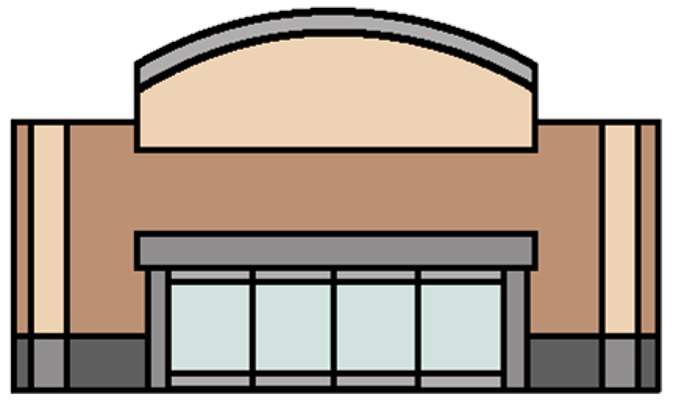

Background Research
You were able to determine that there is an average of 120 customers per day, and from this you calculated that an average of 15 people come by the store every hour.
Now how will we determine the number of cashiers that we will need to hire?
We need to do more background research and determine how many people a cashier can check out per hour. Then we can figure out how many cashiers we need to hire to serve 15 people per hour.
CONTACT Name
Store Name
Store Name